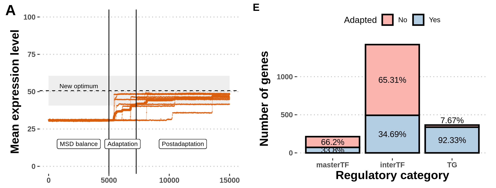
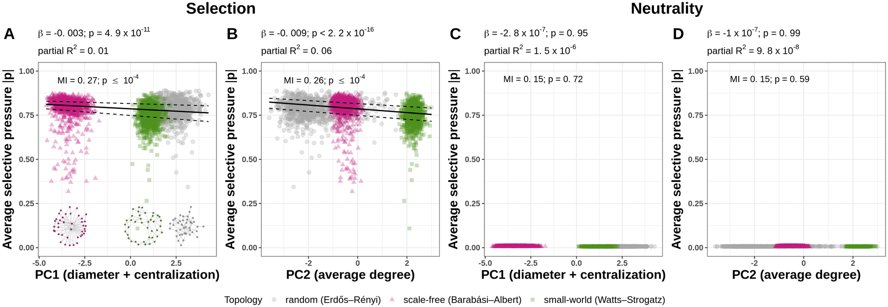
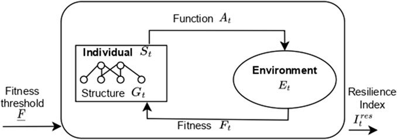

I'm a biologist interested in evolution, development, systems biology and complex systems.
I'm trained in both wetlab and drylab biological methods, but nowadays I prefer the computer desk to the lab bench.
My main interests are studying gene expression and molecular networks in the cell, and their evolution.
What particularly tickles my fancy:
gene expression level evolution, i.e. how gene expression level changes over time and through which regulatory mechanisms.
cell differentiation, i.e. how changes in gene expression lead cells from one phenotypic state to another, or to novel phenotypes.
interactions between genes (gene networks) and interactions between cells and tissues in developing embryos.
computational or mathematical models of gene expression/gene networks/cells, especially dynamical models (which incorporate the time dimension), and testing their predictions with experimental data.
simulations of the evolutionary process by rounds of reproduction, selection and mutation (in silico experimental evolution).
non-reductionist approaches in biological research, i.e. looking at organisms as systems whose parts interact with one another instead of looking at organisms as independent sets of SNPs or genes.
discovery-driven science, instead of sloppy science driven by chasing the next minimal publishable unit.
Evolution of gene expression in gene regulatory networks in changing environments
The variability of gene expression levels, also known as gene expression noise, is an evolvable trait subject to selection. While gene expression noise is detrimental in constant environments where the expression level is under stabilizing selection, it may be beneficial in changing environments when the phenotype is far from the optimum. However, expression noise propagates along the gene network, making the evolution of connected genes interdependent. I explored how their position in the gene network constrains the evolution of genes under selection using an in silico evolution experiment. I simulated the evolution of populations of model gene regulatory networks under directional and fluctuating selection on the gene expression level while allowing the basal expression level and expression noise level to mutate. I found that expression noise is only transiently favoured under directional selection, but high levels of noise can be maintained in a fluctuating selection regime. Furthermore, target genes, regulated by other genes, were more likely to increase their gene-specific expression noise than regulator genes. These findings suggest that both the mean and variance of gene expression levels respond to selection due to changing environments – and do so in a network-dependent manner. They further point at gene expression noise as a putative mechanism for populations to escape extinction when facing environmental changes.

Published as article preprint titled "When is gene expression noise advantageous?" on bioRxiv.
Read article here
or download PDF here.
Reading is boring? Watch a 10min video summary instead:
Evolution of gene expression noise in gene regulatory networks
Expression noise, the variability of the amount of gene product among isogenic cells grown in identical conditions, originates from the inherent stochasticity of diffusion and binding of the molecular players involved in transcription and translation. It has been shown that expression noise is an evolvable trait and that central genes exhibit less noise than peripheral genes in gene networks. A possible explanation for this pattern is increased selective pressure on central genes since they propagate their noise to downstream targets, leading to noise amplification. To test this hypothesis, I developed a new gene regulatory network model with inheritable stochastic gene expression and simulated the evolution of gene-specific expression noise under constraint at the network level. I observed that local network features affect both the probability to respond to selection, and the strength of the selective pressure acting on individual genes. In particular, the reduction of gene-specific expression noise as a response to stabilizing selection on the gene expression level is higher in genes with higher centrality metrics. Furthermore, global topological structures such as network diameter, centralization and average degree affect the average expression variance and average selective pressure acting on constituent genes. These results demonstrate that selection at the network level leads to differential selective pressure at the gene level, and local and global network characteristics are an essential component of gene-specific expression noise evolution.

Published as article titled "Being noisy in a crowd: Differential selective pressure on gene expression noise in model gene regulatory networks" in PLOS Computational Biology.
Read article here
or download open access PDF here.
Reading is boring? Watch a 10min video summary instead:
Complex systems - the concept of resilience in biology
During my PhD I had the opportunity to attend a complex systems summer school organized by the Santa Fe Institute.
I was interested in the ability of biological systems to undergo internal perturbations like noise and maintain their function, so I joined a working group which set out to study the concept of resilience as a project.
We looked into how different disciplines understand resilience and compared them in an attempt to find the essential aspects and provide a unified, interdisciplinary definition.

Published as article titled "Resilience - Towards an interdisciplinary definition using information theory" in Frontiers in Complex Systems.
Read article here.
Philosophy of biology - is an organism a machine?
In my PhD I studied how randomness in gene expression level can be selectively advantageous or disadvantageous depending on the environmental conditions.
Randomness/stochasticity is often overlooked when thinking about molecular mechanisms and in the discussion of my thesis I wrote about why that is not only incorrect, but can also be harmful to our understanding of living beings.
Puzović, N., Madaan, T. & Dutheil, J. Y. (2023). Being noisy in a crowd: Differential selective pressure on
gene expression noise in model gene regulatory networks. PLOS Computational Biology.
https://doi.org/10.1101/2022.08.01.502352
Nisioti, E., Clark, C., Kunal Das, K., Ekkehard, E., Friedenberg, N. A., Gates, E., Lambros, M., Lazurko, A.,
Puzović, N. & Salas, I. (2023). Resilience—towards an interdisciplinary definition using information theory.
Frontiers in Complex Systems.
https://doi.org/10.3389/fcpxs.2023.1236406
V. Barroso, G., Puzović, N. & Dutheil, J. Y. (2019). Inference of recombination maps from a single pair of
genomes and its application to ancient samples. PLOS Genetics, 15(11), 1–21.
https://doi.org/10.1371/journal.pgen.1008449
Barroso, G. V., Puzovic, N. & Dutheil, J. Y. (2018). The evolution of gene-specific transcriptional noise is
driven by selection at the pathway level. Genetics, 208(1), 173–189.
https://doi.org/10.1534/genetics.117.300467
Research Experience
Molecular Systems Evolution Research Group, PhD researcher
Department of Theoretical Biology, Max Planck Institute for Evolutionary Biology, Plön (2020-2023)
Genomic Microbiology Group, PhD rotation
Institute of General Microbiology, Kiel University, Kiel (2019)
Stochastic Evolutionary Dynamics Research Group, PhD rotation
Department of Evolutionary Theory, Max Planck Institute for Evolutionary Biology, Plön (2019)
Molecular Systems Evolution Research Group, Master’s thesis project
Department of Evolutionary Genetics, Max Planck Institute for Evolutionary Biology, Plön (2019)
Laboratoire Matière et Systèmes Complexes (Laboratory for Matter and Complex Systems), Internship
UMR 7057 CNRS, Université Paris 7 Diderot, Université Sorbonne Paris Cité (2018 – 2019)
Tautz Research Group, Internship
Department of Evolutionary Genetics, Max Planck Institute for Evolutionary Biology, Plön (2018)
Molecular Systems Evolution Research Group, Research Assistant
Department of Evolutionary Genetics, Max Planck Institute for Evolutionary Biology, Plön (2017 – 2018)
Molecular Systems Evolution Research Group, Internship
Department of Evolutionary Genetics, Max Planck Institute for Evolutionary Biology, Plön (2015, 2016)
Awards and Honors
Magna cum laude honors for the PhD dissertation, graded 1.0/1.0 (scale 1.0-4.0, best 1.0),
awarded by Christian-Albrechts-Universität zu Kiel, Germany (2023)
International Max Planck Research School for Evolutionary biology PhD grant,
granted by the Max Planck Society and the Max Planck Institute for Evolutionary Biology (2019)
ERASMUS+ Internship Scholarship, granted by ERASMUS+ of European Union (2018)
Fellowship of the City of Belgrade, granted by the City Administation of Belgrade (2010, 2011)
Conferences (selected)
International Max Planck Research School for Evolutionary Biology Retreat, oral presentation
Kiel, Germany, 16-17 Sep 2021
Society for Molecular Biology & Evolution Annual Meeting (SMBE), virtual poster presentation
Society for Molecular Biology & Evolution, 03-08 Jul 2021
Aquavit 2021, virtual poster presentation
Max Planck Institute for Evolutionary Biology, Plön, Germany, 17-18 Jun 2021
CSHL Probabilistic Modeling in Genomics, virtual poster presentation
Cold Spring Harbor Laboratory, New York, USA, 14-16 Apr 2021
CSHL Network Biology Meeting, virtual poster presentation
Cold Spring Harbor Laboratory, New York, USA, 16-19 Mar 2021
Interdisciplinary Approach to Molecular Evolution, virtual poster presentation
CNRS, France, 15-17 Dec 2020
Aquavit 2020, virtual poster presentation
Max Planck Institute for Evolutionary Biology, Plön, Germany, Jun 2020
Society for Molecular Biology & Evolution Annual Meeting (SMBE), oral presentation
Society for Molecular Biology & Evolution, Manchester, United Kingdom, 21-15 Jul 2019